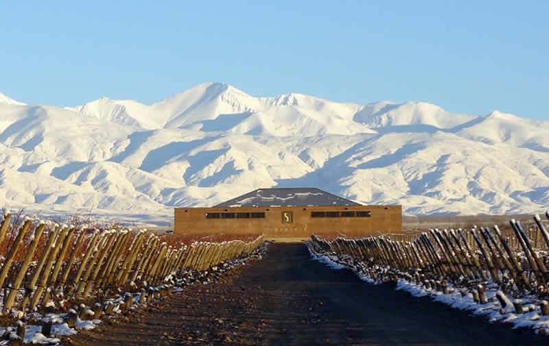

Informacion de MENDOZA
Mendoza es una ciudad de la región de Cuyo en Argentina y es el corazón de la zona vitivinícola argentina, famosa por sus Malbecs y otros vinos tintos. Sus distintas bodegas ofrecen degustaciones y visitas guiadas. La ciudad tiene calles amplias y frondosas rodeadas de edificios modernos y art déco, y con plazas más pequeñas que rodean la Plaza Independencia, sitio del Museo Municipal de Arte Moderno subterráneo, que exhibe arte moderno y contemporáneo.
Población metropolitana: 1,033,000
Mendoza es sinonimo del sol y vino extraordinario. Tambien es la provincia que alberga esa maravilla llamada Aconcagua, la montaña de casi siete mil metros de altura.
Y cuenta con paisajes bellisimos para visitar durante todo el año. Estos son algunos lugares turisticos para saber que hacer en una escapada a la tierra del Malbec.
Lugares turísticos
-

Parque San Martin
es el principal pulmón verde y el más antiguo de la ciudad, con 123 años. Son 307 hectáreas diseñadas por el paisajista francés Carlos Thays, con preciosos portones, monumentos y jardines para pasar el día.
El parque también alberga edificios emblemáticos de la ciudad, como Teatro Griego Frank Romero Day, el Estadio Malvinas Argentinas y la Universidad Nacional de Cuyo, entre otros
Ubicación -

Aconcagua
Es una de las maravillas de Mendoza y una de sus áreas protegidas. El pico de 6.962 metros es el más alto de América y una obsesión para miles de montañistas.
El parque ofrece desde suaves senderos de sólo dos horas de duración hasta otros que implican siete días de duro trekking.
En cualquier caso, los paisajes serán espectaculares, con ríos, miradores, valles y montañas nevadas.
Ubicación -

San Rafael es la segunda ciudad de Mendoza. Además de ser un oasis rodeado de fincas y bodegas, suele servir como base en el recorrido por Cañón del Atuel, ubicado a sólo 40 kilómetros. Se trata de un estrecho cañón, donde desemboca el río Atuel. La erosión fluvial y del viento producen asombrosas formaciones rocosas, como La Torta de Hojaldre, El Cinturón de San Martín, La Procesión y El Hongo. El escenario cordillerano es conocido en todo el país por la práctica de deportes de aventura, como rafting, canotaje, kayak y windsurf.
Ubicación
-

Las Leñas
Ubicado en el departamento de Malargüe, entre paisajes cordilleranos, es el principal centro de esquí de la provincia y uno de los más importantes de América Latina. Tiene 29 pistas de todos los niveles y una ski carpet para aquellos que están dando sus primeros pasos en el deporte. Si bien su temporada alta es durante el invierno, en los meses de verano se organizan cabalgatas, circuitos de mountain bike y trekking. Algunas de las telesillas quedan habilitadas para paseos.
Ubicación -

Las Bodegas
Mendoza es una de las ciudades más importantes del continente en el “nuevo mundo” del vino. El 70% del vino que se produce en la Argentina viene de Mendoza. Y son más de 150 las bodegas que reciben a los turistas para mostrarles el proceso y, por supuesto, invitarlos a degustar sus vinos. Muy cerca de la ciudad de Mendoza, en el departamento de Luján de Cuyo, están las localidades de Vistalba, Agrelo y Perdriel, que alberga a algunas de las bodegas más importantes de la provincia. Muchas ofrecen también servicio de alojamiento y restaurantes de alto nivel. No deje de probar el Malbec, la cepa insignia de la provincia.
Ubicación -

Termas de Cacheuta
En toda la provincia hay yacimientos de aguas termales. Uno de los más importantes y antiguos es Hotel & Spa Termas Cacheuta, a 164 kilómetros de la ciudad de Mendoza y muy cerca del Dique Potrerillos. En medio de un entorno cordillerano, el complejo tiene piletas que oscilan entre los 35°C a 50°C. Las aguas provienen de deshielo; se infiltran a grandes profundidades y luego chocan con la roca granítica de Cacheuta para volver a la superficie. Hay opciones de masajes y un parque temático para los más chicos.
Ubicación